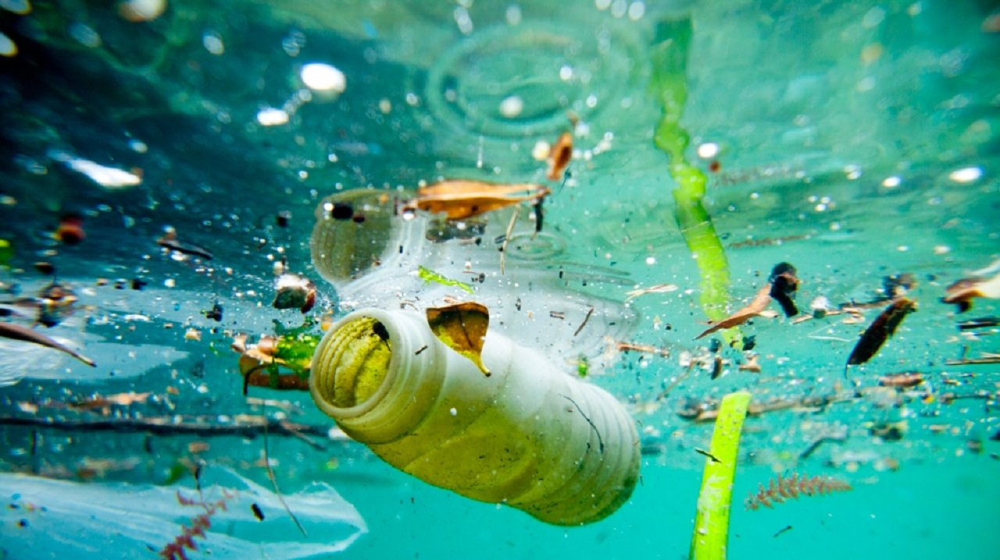
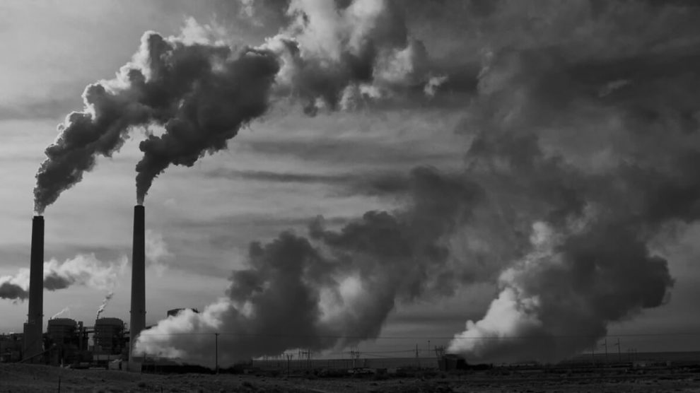
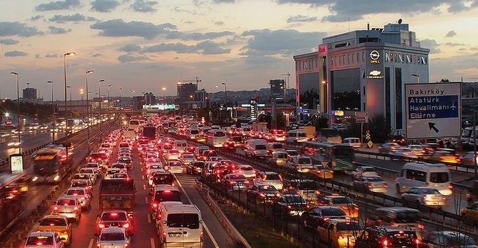
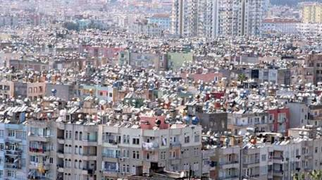
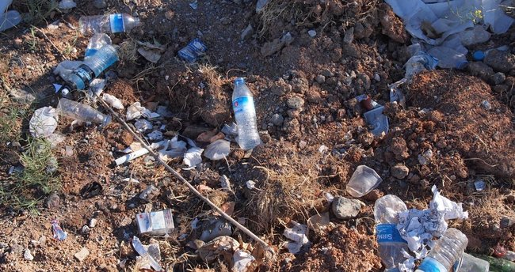

Çeşİtlİ Kİrlİlİkler
-
Su Kirliliği
Hava kirliliğinden sonra en tehlikeli çevre kirliliğidir. Suların içerisinde karışan sentetik maddeler, birçok kronik rahatsızlığın başlıca nedenidir. Nükleer santrallerden ve üretim tesislerden çıkan kimyasalların önce toprağa sonra yer altı sularına karışması, hayvanların ve bitkilerin zarar görmesine neden olur.
 -
Hava kirliligi
En yaygın ve en tehlikeli çevre kirliliğidir. Havadaki oksijen miktarının azalıp zararlı gazların artması sonucu oluşur. Aynı zamanda normal seviyenin üstündeki su buharı ve toz da hava kirliliğini arttırır. Toz, birçok alerjik hastalığın ortaya çıkmasına neden oluyor. Zehirli gazlar ise, solunum yetmezliği ve akciğer kanseri gibi ölümcül hastalıklara yol açmaktadır.
 -
Gürültü Kirliliği
Gürültü kirliliği en çok kalabalık şehirlerde görülüyor. Yüksek sesle dinlenen müzik, korna sesi ve şantiye alanlarında çalıştırılan makinelerin gürültüsü, dolaylı olarak çevre kirliliğine neden olmaktadır.
 -
Görüntü Kirliliği
Mimari estetikten uzak bir şekilde inşa edilmiş binalar ve üst üste yığılmış çöpler görüntü kirliliğine örnek olarak gösterebilir.
 -
Toprak Kirliliği
Pil gibi içerisinde zehirli kimyasal bulunan atıkların geri dönüşüm kutusu yerine yere atılması toprak kirliliğine yol açar. Bununla birlikte bazı tarım ilaçlarının içerisinde de eser miktarda kimyasal maddeler bulunuyor. Toprak kirliliği, tarımsal arazilerdeki verimliliğin düşmesine neden olur. Topraktaki kirlilik oranı arttıkça birçok böcek türü yok olur ve ekolojik denge bozulur.
